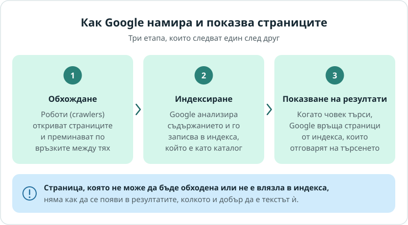
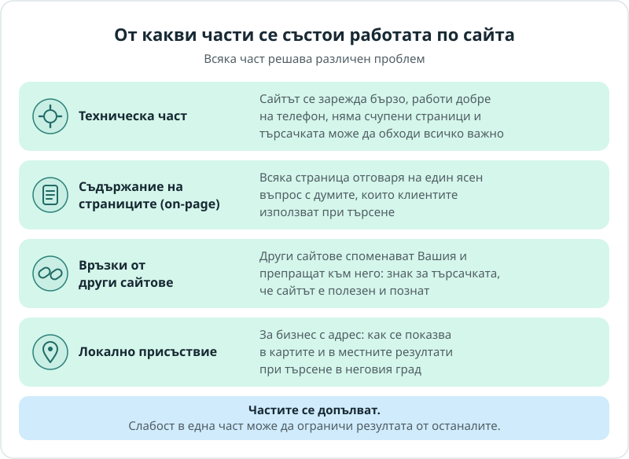

Съвети
Какво е SEO и какво печели малкият бизнес от него
SEO е работата, с която един сайт става по-разбираем за търсачките, за да го намират хората, които вече търсят Вашата услуга. За ресторант, салон, автосервиз, онлайн магазин, клиника или офис това означава по-голям шанс сайтът да се появи в Google, когато клиент от Вашия град търси точно това, което предлагате. Работата обхваща техническата част на сайта, текстовете на страниците и връзките от други сайтове.
Обновено
Какво означава SEO с прости думи?
Съкращението SEO идва от английското search engine optimization и означава оптимизация за търсачки. Целта е търсачката да разбере за какво е всяка страница от сайта Ви и кога е подходящо да я покаже на човек, който търси нещо конкретно.
На практика работата включва ясни заглавия и текстове, сайт, който се отваря добре на телефон, и отделна страница за всеки основен въпрос на клиента. Търсачката чете сайта по различен начин от човека, затова подредбата на страниците и думите в тях имат значение. Добре подредената страница помага и на посетителя, защото той намира отговора по-бързо.
За малкия бизнес ползата е, че повече от хората, които вече търсят Вашата услуга, могат да стигнат до сайта Ви. В един измислен пример автосервиз с отделна страница за смяна на съединител има шанс да се появи, когато някой в неговия град търси точно тази услуга.
Как Google намира и показва страниците?
Google описва работата на своята търсачка в три етапа, които следват един след друг.

- Обхождане. Автоматични програми, наречени роботи (crawlers), откриват страници в интернет и изтеглят текста, снимките и видеоклиповете от тях. Те преминават от една страница към друга по връзките между тях.
- Индексиране. Google анализира съдържанието на страницата и записва информацията в своя индекс, който работи като огромен каталог.
- Показване на резултати. Когато човек търси, Google връща страници от индекса, които отговарят на търсенето му.
Страница, която не може да бъде обходена или не е влязла в индекса, няма как да се появи в резултатите, колкото и добър да е текстът ѝ. Полезно е да проверите дали Google вижда страниците на сайта Ви. Search Console е инструментът на Google, в който виждате кои страници са в индекса и при какви търсения се появяват.
От какви части се състои работата по сайта?
Работата по сайта обикновено се дели на няколко части, които се допълват. Всяка от тях решава различен проблем, затова слабост в една част може да ограничи резултата от останалите.

- Техническа част. Сайтът се зарежда бързо, работи добре на телефон, няма счупени страници и търсачката може да обходи всичко важно.
- Съдържание на страниците (on-page). Всяка страница отговаря на един ясен въпрос с думите, които клиентите използват при търсене. Тези думи се избират според начина, по който Ви търсят клиентите.
- Връзки от други сайтове. Когато други сайтове споменават Вашия и препращат към него, това е знак за търсачката, че сайтът е полезен и познат.
- Локално присъствие. За бизнес с адрес има значение и как се показва в картите и в местните резултати при търсене в неговия град.
Колко внимание иска всяка част, зависи от състоянието на конкретния сайт.
С какво се различават органичните резултати от платената реклама?
Платената реклама в Google показва Вашето обявление в отделни рекламни места, докато плащате за нея. Когато бюджетът спре, спират и показванията. Рекламата е полезна, когато искате видимост веднага, например за нова услуга или за сезонна кампания.
Обикновените (органичните) резултати не се плащат на клик. Мястото в тях зависи от това, доколко страницата отговаря на търсенето и доколко търсачката я разбира. Работата по сайта изисква време, но страница, която вече се показва в търсенията, може да носи посещения и без рекламен бюджет.
Двата подхода могат да се използват едновременно за едни и същи услуги.
Колко време отнема, докато се видят промени?
Няма точен срок, валиден за всички сайтове, затова обещанията за конкретен срок трябва да се приемат с внимание. Google посочва, че някои промени може да се отразят за няколко часа, а други за няколко месеца.
Срокът зависи от това, колко често Google обхожда сайта, колко голяма е промяната и колко силни са другите страници по същата тема. Поправено заглавие може да се отрази сравнително бързо. Нова група страници или връзки от други сайтове обикновено имат нужда от повече време, защото Google трябва да обходи и оцени всяка от тях.
По-полезно е да следите в Search Console как се променят показванията и посещенията от месец на месец. Така виждате дали работата върви в правилната посока, без да чакате определена дата.
Как изглежда основната стратегия за малък бизнес?
SEO стратегията за малък бизнес е подреден план, който започва от въпросите на клиентите и завършва с проверка дали страниците се показват.
- Запишете какво питат клиентите Ви по телефона и кои услуги поръчват най-често.
- Направете отделна страница за всяка основна услуга или тема, вместо да събирате всичко на една страница.
- Проверете техническите основи: скорост на зареждане, работа на телефон и дали Google вижда страниците.
- Пишете полезно съдържание, което дава ясни и точни отговори на реалните въпроси на клиентите.
- Погрижете се за връзки и споменавания от сайтове, свързани с Вашия бранш или с Вашия град.
- Следете в Search Console кои страници се показват и при какви търсения.
Първите стъпки можете да направите и сами, особено ако познавате добре клиентите си. За техническата част и за връзките от други сайтове често е по-лесно да потърсите помощ, когато сайтът е по-стар или има много страници.
Как да разпознаете ненадеждно обещание?
Google посочва ясно, че никой не може да обещае най-горното място в неговите резултати. Ако някой Ви предлага конкретна позиция, това е знак да бъдете внимателни.
- Обещание за точна позиция или за точна дата, на която ще я получите.
- Отказ да обясни какво конкретно ще бъде направено по сайта и защо.
- Пакет от връзки от сайтове, които нямат нищо общо с Вашия бранш, без обяснение откъде идват.
- Тайна методика, за която не получавате ясен отговор.
- Договор, който Ви обвързва за дълъг период, преди да сте видели каква работа е свършена.
Надеждният изпълнител обяснява какво ще промени по сайта, как ще проверите резултата и какво зависи от Вас. Той посочва и кои данни ще следите заедно, например показванията и посещенията в Search Console.
Откъде да започнете, ако искате помощ?
Xtra AI работи по техническата част, текстовете на страниците и връзките от други сайтове, тоест техническо SEO, on-page оптимизация и връзки. Не обещаваме конкретни позиции в Google, трафик, запитвания или срокове за класиране.
Първата стъпка е безплатната диагностика, където избирате вида на бизнеса си и отбелязвате проблемите, които познавате. След нея следва 30-минутен разговор, след който подготвяме оферта с приоритизирани решения и ясни еднократни цени. Срокът зависи от решението и го посочваме в офертата.
Диагностиката не Ви обвързва с нищо и работим без дългосрочни договори.
Често задавани въпроси
Какво означават буквите SEO?
SEO е съкращение от search engine optimization, или оптимизация за търсачки. Това е работата по сайта, с която търсачките разбират страниците му и могат да ги покажат на хората, които търсят съответната услуга.
Може ли сайтът да се показва в Google без платена реклама?
Да, обикновените (органичните) резултати не се плащат на клик. Мястото в тях зависи от това, доколко страницата отговаря на търсенето и доколко търсачката я разбира.
След колко време се виждат резултатите?
Няма еднакъв срок за всички сайтове. Google посочва, че някои промени може да се отразят за няколко часа, а други за няколко месеца.
Може ли някой да обещае най-горното място в Google?
Не, Google посочва, че никой не може да обещае най-горното място в неговите резултати. Предложение с обещана позиция е знак да бъдете внимателни.
Мога ли да започна сам?
Да, първите стъпки можете да направите и сами: да запишете какво питат клиентите Ви и да направите отделна страница за всяка основна услуга. За техническата част и за връзките от други сайтове често е по-лесно да потърсите помощ.
Колко струва работата по сайта при Xtra AI?
Цената е еднократна за всяко решение и зависи от това, какво ще бъде направено. Посочваме я в офертата след безплатната диагностика и работим без дългосрочни договори.
Свързани услуги
- SEO оптимизацияТехническо SEO, on-page оптимизация и работа по връзките, с ясни еднократни цени в офертата след безплатната диагностика.Научете повече
- Ключови думиКак да откриете думите, с които клиентите Ви търсят, да изберете една основна дума за страница и да я използвате естествено.Научете повече
- Безплатна диагностикаОтбележете ситуациите, които познавате от своя бизнес, и вижте ориентировъчно колко часа седмично отнемат.Научете повече
Първата стъпка е безплатна
Диагностиката не Ви обвързва с нищо. Показваме Ви точно какво можем да поправим и колко ще струва.